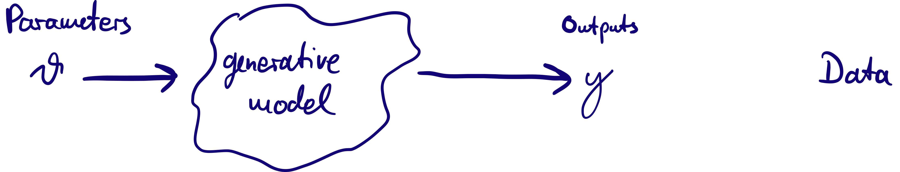
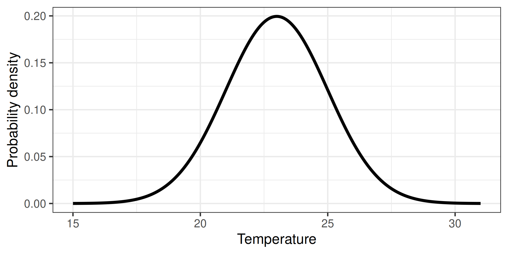
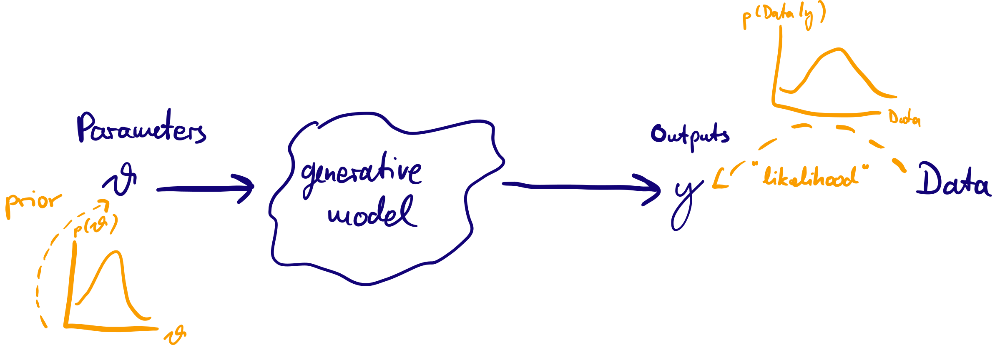

Introduction to Bayesian inference with stan
Nowcasting and forecasting of infectious disease dynamics
Why statistical concepts?
We’ll need to estimate things (delays, reproduction numbers, case numbers now and in the future)
We’ll want to correctly specify uncertainty
We’ll want to incorporate our domain expertise
We’ll do this using Bayesian inference
Bayesian inference in 10 minutes
Probability distributions (discrete)
- E.g., how many people die of horse kicks if there are 0.61 kicks per year
- Described by the Poisson distribution
Two directions
- Calculate the probability
- Randomly sample
Calculate discrete probability
- E.g., how many people die of horse kicks if there are 0.61 kicks per year
- Described by the Poisson distribution

Two directions
- Calculate the probability
- Randomly sample
Generate a random (Poisson) sample
- E.g., how many people die of horse kicks if there are 0.61 kicks per year
- Described by the Poisson distribution
Two directions
- Calculate the probability
- Randomly sample
Probability distributions (continuous)
- Extension of probabilities to continuous variables
- E.g., the temperature in Stockholm tomorrow
Normalisation: \[ \int p(a) da = 1 \]
Marginal probabilities: \[ p(a) = \int_{} p(a, b) db\]
Two directions
- Calculate the probability (density)
- Randomly sample
Calculate probability density
- Extension of probabilities to continuous variables
- E.g., the temperature in Stockholm tomorrow

Two directions
- Calculate the probability
- Randomly sample
Generate a random (normal) sample
Two directions
- Calculate the probability
- Randomly sample
Bayesian inference
The generative model can produce output which looks like data given a set of parameters \(\theta\).
Idea of Bayesian inference: treat \(\theta\) as random variables (with a probability distribution) and condition on data: posterior probability \(p(\theta | \mathrm{data})\) as target of inference.
Bayes’ rule
- We treat the parameters of the a \(\theta\) as random with prior probabilities given by a distribution \(p(\theta)\). Confronting the model with data we obtain posterior probabilities \(p(\theta | \mathrm{data})\), our target of inference. Applying the rule of conditional probabilities, we can write this as
\[ p(\theta | \textrm{data}) = \frac{p(\textrm{data} | \theta) p(\theta)}{p(\textrm{data})}\]
\(p(\textrm{data} | \theta)\) is the likelihood
\(p(\textrm{data})\) is a normalisation constant
In words, \[\textrm{(posterior)} \propto \textrm{(normalised likelihood)} \times \textrm{(prior)}\]
Bayesian inference
MCMC
- Markov-chain Monte Carlo (MCMC) is a method to generate samples of \(\theta\) that come from the posterior distribution given \(\textrm{data}\), i.e the target of inference.
- Many flavours of MCMC exist: Metropolis-Hastings, Hamiltonian Monte Carlo, etc.
What is stan and why do we use it?
a Probabilistic Programming Language for Bayesian inference (i.e., a way to write down models)
models are written in a text file (often ending
.stan) and then loaded into an R/python/etc interfaceonce a model is written down, stan can be used to generate samples from the posterior distribution (using a variety of methods)
How to write a model in stan
Example: fairness of a coin
Data:
\(N\) coin flips
\(x\) times heads
Parameters
- \(\theta\), probability of getting heads; uniform prior in \([0, 1]\)
data {
int<lower = 1> N; // integer, minimum 1
int<lower = 0> x; // integer, minimum 0
}
parameters {
real<lower = 0, upper = 1> theta; // real, between 0 and 1
}
model {
// Uniform prior
theta ~ uniform(0, 1);
// Binomial likelihood
x ~ binomial(N, theta);
}Using stan from R
There are two packages for using stan from R. We will use the cmdstanr package:
data {
int<lower = 1> N; // integer, minimum 1
int<lower = 0> x; // integer, minimum 0
}
parameters {
real<lower = 0, upper = 1> theta; // real, between 0 and 1
}
model {
// Uniform prior
theta ~ uniform(0, 1);
// Binomial likelihood
x ~ binomial(N, theta);
}Sampling from the posterior
Running MCMC with 4 parallel chains...
Chain 1 Iteration: 1 / 1000 [ 0%] (Warmup)
Chain 1 Iteration: 100 / 1000 [ 10%] (Warmup)
Chain 1 Iteration: 200 / 1000 [ 20%] (Warmup)
Chain 1 Iteration: 300 / 1000 [ 30%] (Warmup)
Chain 1 Iteration: 400 / 1000 [ 40%] (Warmup)
Chain 1 Iteration: 500 / 1000 [ 50%] (Warmup)
Chain 1 Iteration: 501 / 1000 [ 50%] (Sampling)
Chain 1 Iteration: 600 / 1000 [ 60%] (Sampling)
Chain 1 Iteration: 700 / 1000 [ 70%] (Sampling)
Chain 1 Iteration: 800 / 1000 [ 80%] (Sampling)
Chain 1 Iteration: 900 / 1000 [ 90%] (Sampling)
Chain 1 Iteration: 1000 / 1000 [100%] (Sampling)
Chain 2 Iteration: 1 / 1000 [ 0%] (Warmup)
Chain 2 Iteration: 100 / 1000 [ 10%] (Warmup)
Chain 2 Iteration: 200 / 1000 [ 20%] (Warmup)
Chain 2 Iteration: 300 / 1000 [ 30%] (Warmup)
Chain 2 Iteration: 400 / 1000 [ 40%] (Warmup)
Chain 2 Iteration: 500 / 1000 [ 50%] (Warmup)
Chain 2 Iteration: 501 / 1000 [ 50%] (Sampling)
Chain 2 Iteration: 600 / 1000 [ 60%] (Sampling)
Chain 2 Iteration: 700 / 1000 [ 70%] (Sampling)
Chain 2 Iteration: 800 / 1000 [ 80%] (Sampling)
Chain 2 Iteration: 900 / 1000 [ 90%] (Sampling)
Chain 2 Iteration: 1000 / 1000 [100%] (Sampling)
Chain 3 Iteration: 1 / 1000 [ 0%] (Warmup)
Chain 3 Iteration: 100 / 1000 [ 10%] (Warmup)
Chain 3 Iteration: 200 / 1000 [ 20%] (Warmup)
Chain 3 Iteration: 300 / 1000 [ 30%] (Warmup)
Chain 3 Iteration: 400 / 1000 [ 40%] (Warmup)
Chain 3 Iteration: 500 / 1000 [ 50%] (Warmup)
Chain 3 Iteration: 501 / 1000 [ 50%] (Sampling)
Chain 3 Iteration: 600 / 1000 [ 60%] (Sampling)
Chain 3 Iteration: 700 / 1000 [ 70%] (Sampling)
Chain 3 Iteration: 800 / 1000 [ 80%] (Sampling)
Chain 3 Iteration: 900 / 1000 [ 90%] (Sampling)
Chain 3 Iteration: 1000 / 1000 [100%] (Sampling)
Chain 4 Iteration: 1 / 1000 [ 0%] (Warmup)
Chain 4 Iteration: 100 / 1000 [ 10%] (Warmup)
Chain 4 Iteration: 200 / 1000 [ 20%] (Warmup)
Chain 4 Iteration: 300 / 1000 [ 30%] (Warmup)
Chain 4 Iteration: 400 / 1000 [ 40%] (Warmup)
Chain 4 Iteration: 500 / 1000 [ 50%] (Warmup)
Chain 4 Iteration: 501 / 1000 [ 50%] (Sampling)
Chain 4 Iteration: 600 / 1000 [ 60%] (Sampling)
Chain 4 Iteration: 700 / 1000 [ 70%] (Sampling)
Chain 4 Iteration: 800 / 1000 [ 80%] (Sampling)
Chain 4 Iteration: 900 / 1000 [ 90%] (Sampling)
Chain 4 Iteration: 1000 / 1000 [100%] (Sampling)
Chain 1 finished in 0.0 seconds.
Chain 2 finished in 0.0 seconds.
Chain 3 finished in 0.0 seconds.
Chain 4 finished in 0.0 seconds.
All 4 chains finished successfully.
Mean chain execution time: 0.0 seconds.
Total execution time: 0.3 seconds. variable mean median sd mad q5 q95 rhat ess_bulk ess_tail
lp__ -8.66 -8.38 0.73 0.31 -10.06 -8.15 1.01 726 869
theta 0.59 0.60 0.13 0.14 0.36 0.80 1.01 715 704Introduction to Bayesian inference with stan